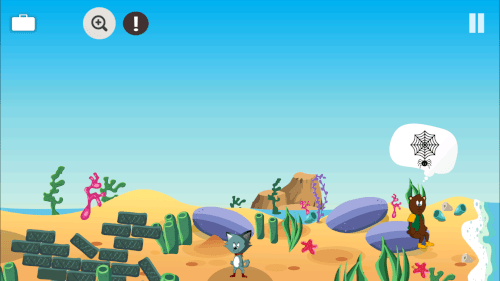
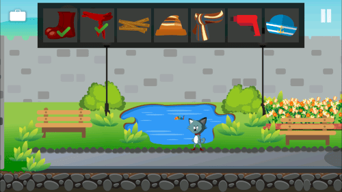
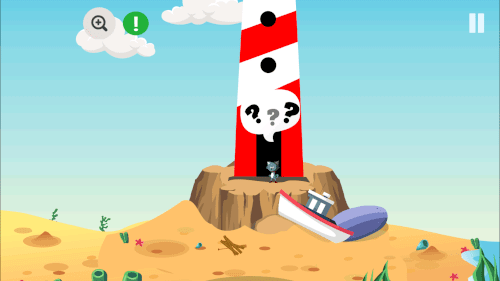

Tiny Story 3 – Aventure point-and-click
Tiny Story 3 est une aventure point-and-click douce et relaxante. Partez avec Wolfy à travers des îles mystérieuses, découvrez des indices et aidez les habitants dans leurs petites quêtes du quotidien.
Collectez des objets, combinez-les et résolvez des énigmes simples et intuitives. Tout est pensé pour être confortable sur mobile comme sur tablette.
Le jeu est disponible en six langues : français, anglais, espagnol, italien, allemand et suédois.
Si vous aimez les petits mystères, les décors dessinés à la main et les aventures calmement rythmées, Tiny Story 3 vous accompagnera dans une histoire tendre et colorée.
Un mystère attachant
Que s’est-il passé pendant la nuit ? Suivez la piste, interrogez les habitants et reconstituez les événements qui ont mené à la disparition de la mer.

Contrôles simples et intuitifs
Touchez pour explorer, ramasser des objets ou les utiliser ensemble. Une interface fluide et agréable adaptée à tous les âges.

Besoin d’un coup de pouce ?
Des vidéos de solution gratuites vous aident à continuer l’aventure sans stress ni blocage.
